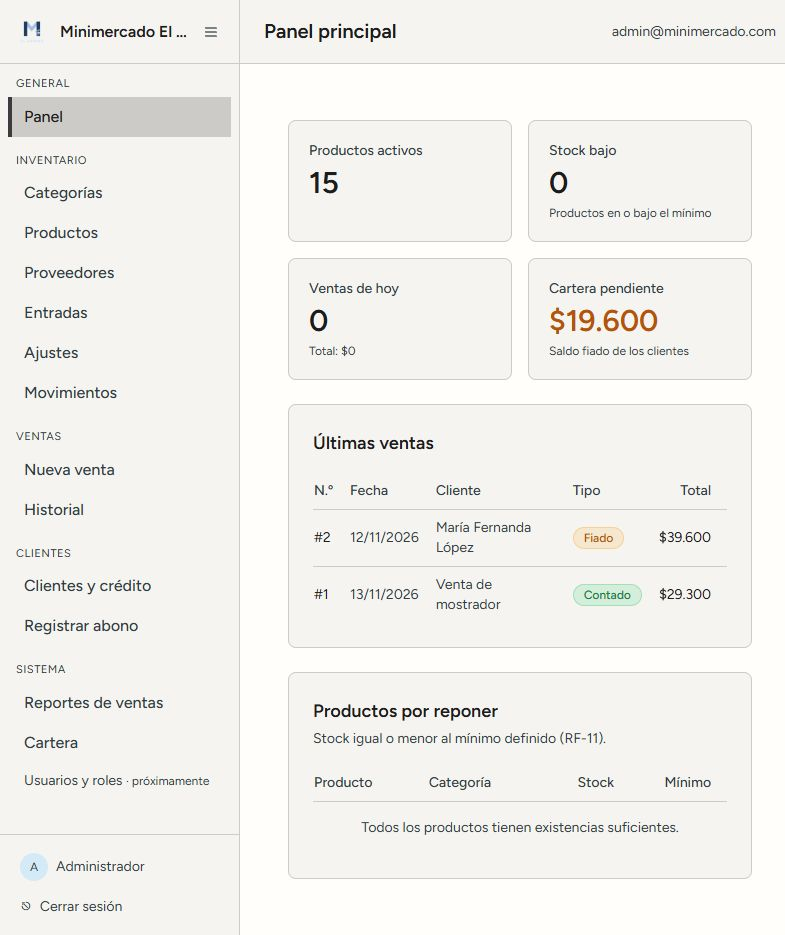
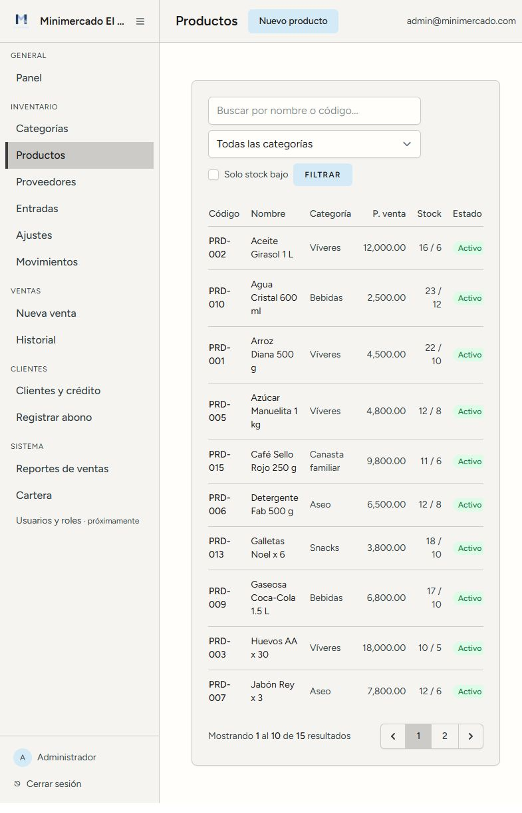
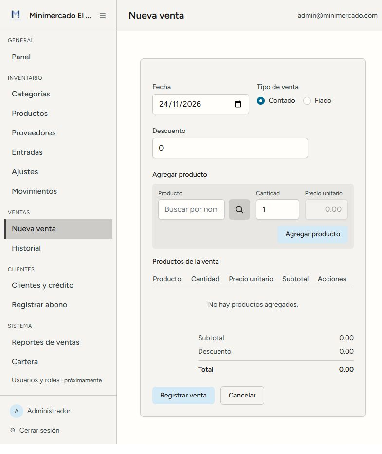
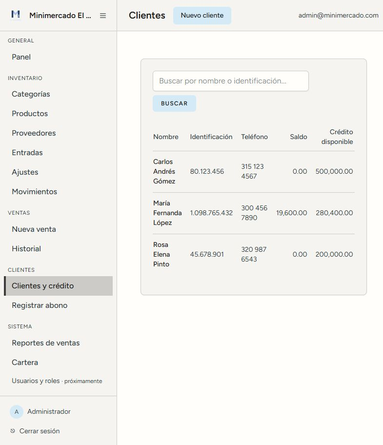
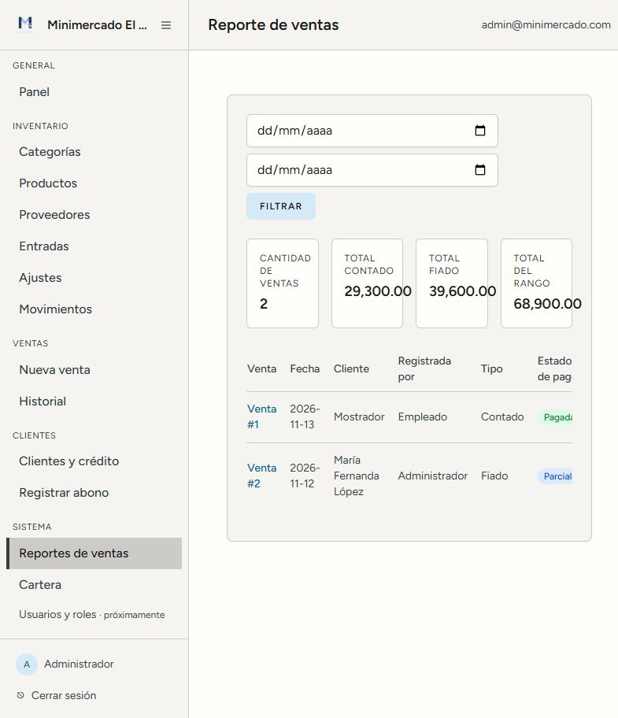

MiniMarketElAhorro
Laravel · BladeSistema web para la gestión de un minimercado: control de productos, inventario, compras, ventas de contado y fiadas, clientes, abonos y reportes. Incluye roles (administrador, empleado y cliente) y dashboard con indicadores.
LaravelBladeTailwindMySQL
Capturas del proyecto




